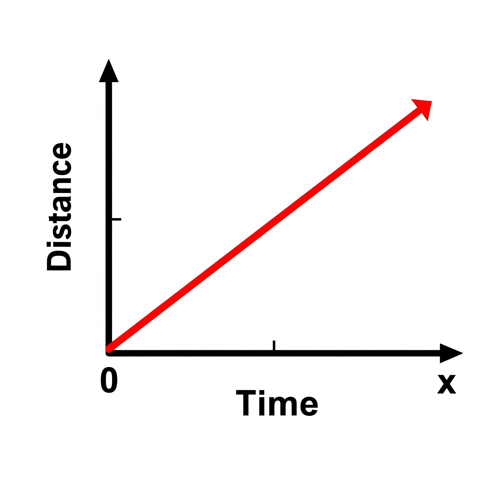

3.6 Position-Time Graphs
A position-time graph (or distance-time graph) shows how the position of an object changes with time. The shape of the graph provides information about the type of motion an object undergoes.
Graph for Uniform Motion
In uniform motion, an object covers equal distances in equal intervals of time. This produces a straight line graph.
The constant slope of the line indicates constant speed.
Graph for Non-Uniform Motion
In non-uniform motion, an object covers unequal distances in equal intervals of time. This produces a curved graph.
The slope of the graph changes at different points, indicating a change in speed or direction.
How to Interpret Position-Time Graphs
- Flat (horizontal) line: The object is at rest; no change in position over time.
- Straight, upward-sloping line: Uniform motion with constant speed.
- Curved line: Non-uniform motion; speed is increasing or decreasing.
- Steeper slope: Faster speed.
- Gentler slope: Slower speed.
Relationship Between Slope and Speed
Speed can be calculated from the slope of the position-time graph using:
\[ \text{Speed} = \frac{\text{Change in Position (Δx)}}{\text{Change in Time (Δt)}} \]
A higher slope value indicates a higher speed.
Real-Life Application
Position-time graphs are commonly used in sports, vehicle tracking, and scientific experiments to monitor how objects move over time.
For instance, GPS data can generate a position-time graph for a runner in a marathon, showing variations in speed throughout the race.